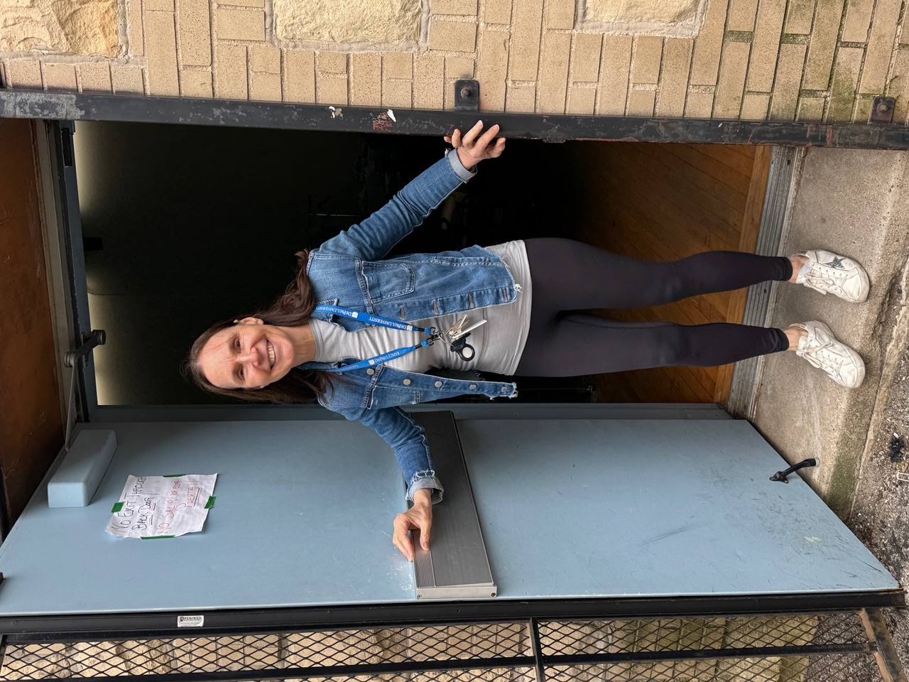
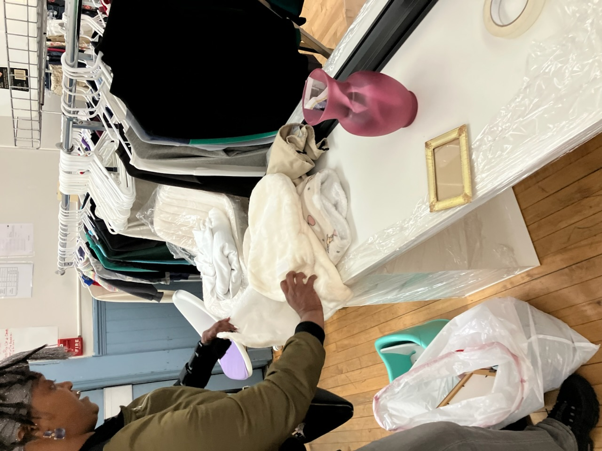
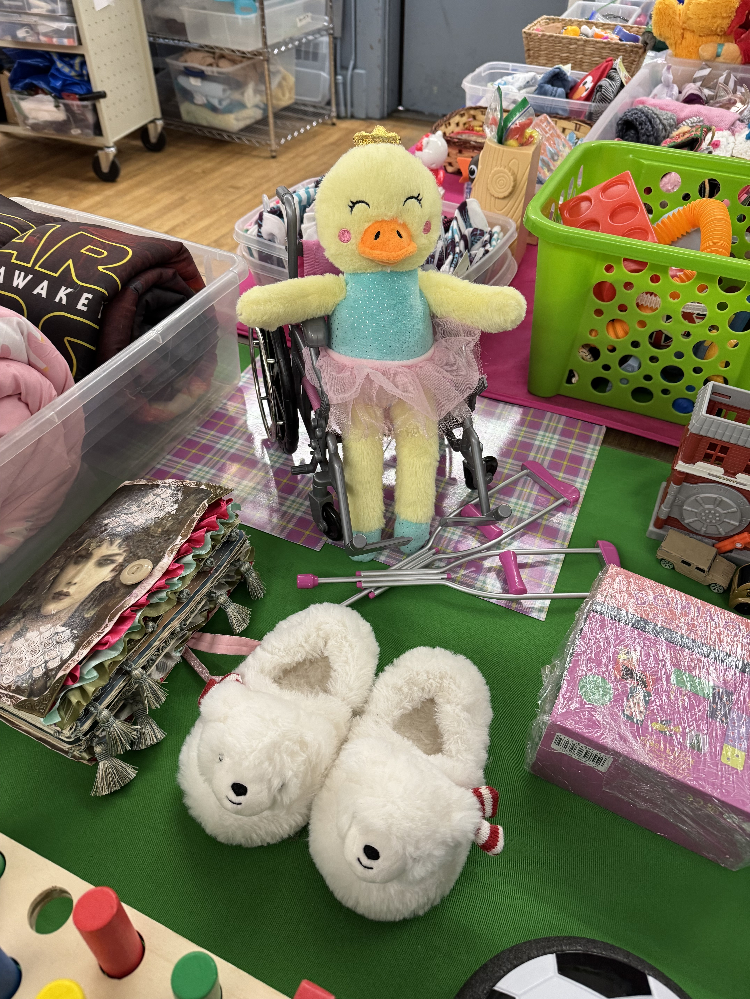
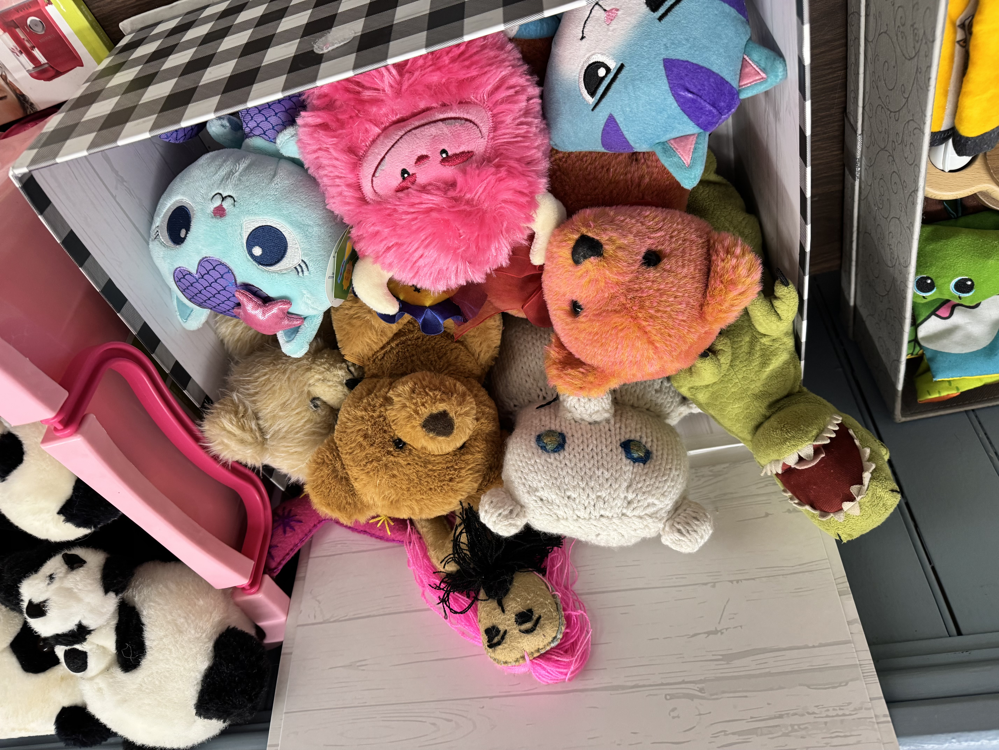

A Closet Looking for a Home

Founded in the emerging migrant crisis and now a place for all of those facing food, clothing and shelter insecurities to receive basics like clothing, children’s toys and equipment, blankets and shoes from generous donors shared by warmhearted volunteers, St. Chrysostom’s Closet is looking for a new home in the Near North. A ministry to the homeless, those who ride the trains all day because there is no place to go, migrant families, CHA housing residents who have little income, the elderly or the disabled all find supplies and the warmth of caring people there. The Closet is facing a deadline and dreaming of a new home.

“We are so grateful to Church of the Ascension which gave us a two-year lease and then extended it for a year. They have been wonderfully welcoming to all of us, guests and volunteers alike, but they are a growing parish which needs the parish hall space for their own projects. Our ministry will be without a home September 1,” Liz Kohlbeck, founder and director of the all-volunteer run project which began at St. Chrysostom’s Episcopal Church which is a funding participant.
On Wednesdays when the shop is open to the public words of welcome from the volunteers many of whom also sort and separate other days during the week ring out and many guests and their children are known by name.

Backpacks, suitcases and bikes are among the most prized items along with warm coats in wintertime and athletic shoes throughout the year. Some donors even come from out of state, college students and other churches give volunteer days there, and, thanks to their partnership with Lutheran Charities, an athletic shoe store collects lightly used shoes donated by their running club members.
It is just that kind of radical hospitality place where what is not used is then shared with sheltering organizations across the city.
“We are not a small ministry and we would ideally want a minimum of 1500 square feet with some additional storage space. Because we are now in a location close to LaSalle and Division where there is direct public transportation and there are CHA housing projects nearby, it is convenient for our guests. Many of our volunteers walk here and there are also several vacant spaces in the area where stores have closed. We are not able to pay rent but could fundraise to cover utilities. If given a 60 to 90 day notice we could be prepared to move should the space become needed,” Kohlbeck said.
When Kohlbeck and her husband Tom moved to Chicago from Wisconsin they brought along experience in leading volunteer food ministries with ancillary services.
“First at Our Lady’s Kitchen Sheboygan where, in addition to meals we distributed cheese and other dairy from government surplus to boy scout drive items to donated Hostess bakery items and then in Milwaukee where they partnered with a meals and other services program, volunteering came to be essential for the DNA of our marriage. We still own property in Sheboygan and an open-door drop in center which helps those suffering from PTSD and other mental and health issues in that building was one of our original tenants. These opportunities have become the foundation of our marriage.”
Because of her experience, Kohlbeck can share best practices with the many groups in the city that serve similar populations. At the height of the migrant crisis St. Chrys’ Closet volunteers visited suburban bus drop-offs at Chicago’s 18th Police District to deliver blankets and other supplies to people who had no idea where they were. Kohlbeck told them about the Closet where they were welcomed often by bi-lingual volunteers. Through their partnerships they eventually touched over 50 percent of Chicago’s police departments in delivering supplies to the migrant populations who camped there. Today they deliver bedding, outerwear, toiletries, food and more to the tent population between inner and outer Lake Shore Drive and share supplies with St. Leonard’s Ministries and many other programs. Recently they partnered to delivered prom dresses and suits to Mano a Mano Unidos that helps families in Berwyn and gave coats and other clothing to Haugan and George Manierre elementary schools.
Kohlbeck told us:
“St. Paul’s Lutheran on LaSalle has been a true partner. Many of our items are dropped off there and we have coaster wagons going back and forth. Catholic Charities, 22Nine Food Rescue which obtains meals from the Convention Center and other large retail and wholesale partners, other churches and other religious institutions to numerous to mention and the Old Town Triangle Association for volunteers and donation drives our list of friends is long.
“It is an absolute marvel to observe the spirit here. All of the volunteers have such good hearts and have made it be like a parttime job. People may have different political opinions but we don’t talk politics here. It all comes down to the real question: what would Jesus do?”


If you know of a space for St. Chrys’s Closet on a long-term or short term basis please text or call Liz Kohlbeck at 920-254-4755. Call her as well if you would like to donate or volunteer.